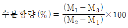
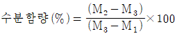
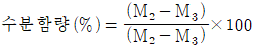
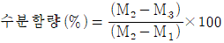

종자기능사 (2007-01-28 기출문제)
1과목: 종자(임의구분)
1. 종자의 조직이 아닌 것은?
- 배젖
- 씨눈(배)
- 기공
- 어린뿌리(유근)
(정답률: 79%)

2. 발아검정시의 정상묘에 속하지 않는 것은?
- 경 결함묘
- 2차 감염묘
- 완전묘
- 부패묘
(정답률: 74%)
3. 저장중인 종자에 곰팡이 등이 발생하기 시작할 때의 수분 함량으로 가장 적합한 것은?
- 12 ~ 14%
- 20 ~ 22%
- 28 ~ 30%
- 36 ~ 38%
(정답률: 44%)
4. 참외 종자의 생산방법으로 가장 적합한 것은?
- 숙기에 수확 후 후숙시켜 채종한다.
- 숙기 이전에 수확 후 후숙시켜 채종한다.
- 숙기 이전에 수확하여 즉시 채종한다.
- 숙기에 수확 후 즉시 채종한다.
(정답률: 51%)
5. 오이나 수박 등 박과 채소의 채종에 대한 설명으로 틀린 것은?
- 웅성불임성을 이용하여 쉽게 채종한다.
- 꽃피기 전날 암꽃과 수꽃에 봉지를 씌운다.
- 오전 9시경까지는 봉지를 벗기고 인공가루 받이를 시킨다.
- 교배 후 다시 봉지를 씌우고 표찰을 단다.
(정답률: 66%)
6. 옥수수 종자의 발아 후 시간이 경과함에 따라 단백질 함량이 증가하는 종자의 부위는?
- 종자전체
- 배젖
- 배축
- 배반
(정답률: 41%)
7. 채종 재배 시에 일반 재배보다 특히 유의해야 할 것은?
- 생산성 증대
- 품질증대
- 병충해 장제
- 순도관리
(정답률: 54%)
8. 화분관이 자라 주공을 통해 배낭 속으로 들어가 극핵 및 난핵과 결합하는 과정을 가리키는 것은?
- 수분
- 화분관신장
- 단위생식
- 수정
(정답률: 87%)
9. 재배농민이 종자세를 이용하여 추정할 수 있는 내용이 아닌 것은?
- 종자세가 높은 종자는 불량한 환경에서 유리할 것 이다.
- 종자세가 높은 종자는 포장출현이 높을 것이다.
- 종자세가 높은 종자는 수량이 많을 것이다.
- 종자세가 높은 종자는 입묘율이 높을 것이다.
(정답률: 42%)
10. 옥수수, 보리, 밀 , 수수, 귀리의 종자를 상온 에서 1년 정도 발아세를 유지하고자 할 때 다음 중 종자의 수분 함량으로 가장 적합한 것은?
- 12 ~ 13%
- 15 ~ 18%
- 19 ~ 22%
- 23 ~ 25%
(정답률: 50%)
11. 종자의 발아를 억제하는 물질을 총칭하여 부르는 것은?
- 옥신(Auxin)
- 블라스토콜린(Blastokolin)
- 플로리겐(Florigen)
- 에틸렌(Ethylen)
(정답률: 53%)
12. 사탕무 종자의 저장물질이 저장되어 있는 종자 기관은?
- 배유
- 자엽
- 종피
- 외배유
(정답률: 31%)
13. 다음 중 종자의 수분 함량을 구하는 공식으로 옳은 것은?(단, M1 종자통만의 무게, M2 : 건조 전 종 자를 포함한 통의 무게, M3 : 건조 후 종자 를 포함한 통의 무게)




(정답률: 55%)
14. 저장 중에 있는 종자를 가해하는 해충은?
- 쌀바구미
- 담배나방
- 물바구미
- 진딧물
(정답률: 78%)
15. 종자 저장 중 병ㆍ해충 방제로 많이 사용되는 증제의 형태가 아닌 것은?
- 가스
- 액체
- 고체
- 산소
(정답률: 76%)
16. 종자를 배병 또는 태좌에 붙어 있는 곳을 가리키는 것은?
- 주공(珠孔)
- 봉선(縫線)
- 합점(合點)
- 제(臍)
(정답률: 81%)
17. 종자 자발휴면의 원인이 아닌 것은?
- 배의 미숙
- 종피내 억제물질
- 종피의 물 투과성 저해
- 배유의 영양과다
(정답률: 60%)
18. 종자 전염성 병의 검정과 관계되는 내용이 아닌 것은?
- 건전한 종자를 생산하기 위한 종자 생산과 관련된 검정
- 작물의 품질 향상을 위한 종자검정
- 종자소독의 필요에 대한 종자검정
- 종자의 수입 및 수출을 위한 검역에 대한 종자 검정
(정답률: 53%)
19. 담은 중 종자 병해 검사 방법으로 부적합한 것은?
- 종자를 살균한 후 조사한다.
- 종자표본을 직접 조사한다.
- 병원균이 자라도록 배양한 후에 조사한다.
- 파종 후 생육중인 식물체를 검사한다.
(정답률: 64%)
20. 채종포 관리 작업을 잘못 설명한 것은?
- 종자생산용 품종과 다른 것은 제거한다.
- 종자가 전염병에 감염된 것은 제거한다.
- 연약하게 자란 것은 제거한다.
- 초기에 구분이 되는 이형주는 개화된 후 제거한다.
(정답률: 79%)
2과목: 작물육종(임의구분)
21. F2 분리비가 15:1로 되는 것은?
- 보족인자
- 중복인자
- 동의인자
- 억제인자
(정답률: 47%)
22. 양친이 각각 별도로 가지고 있는 우량 형질을 한 개체속에 조합시킬 때 이용되는 육종방법 은?
- 변이육종법
- 교잡육종법
- 분리육종법
- 도입육종법
(정답률: 75%)
23. 멘델의 유전법칙에 속하지 않는 것은?
- 변이의 법칙
- 우열의 법칙
- 분리의 법칙
- 도입의 법칙
(정답률: 46%)
24. 인공교배를 할 때 꽃에 봉지를 씌우는 가장 큰 이유는?
- 빗물이 들면 수분한 화분이 유실되기 때문에
- 병균의 침입을 막기 위하여
- 다른 화분이 섞이는 것을 막기 위하여
- 꽃을 보호하여 결실을 촉진시키기 위하여
(정답률: 61%)
25. 자가수정 식물의 특징은?
- 자연교잡율이 높다.
- 자연교잡율이 낮다.
- 종자 결실이 불량하다.
- 종자결실이 많다.
(정답률: 45%)
26. 고추의 1대 잡종 종자생산에 있어서 가장 알맞은 암꽃과 수꽃의 비율은?
- 2 : 1
- 6 : 1
- 10: 1
- 14: 1
(정답률: 37%)
27. 속씨식물의 배낭 구조가 바르게 된 것은?
- 난세포 2개, 조세포 2개, 반족세포 3개, 극핵1
- 난세포 1개, 조세포 3개, 반족세포 2개, 극핵2
- 난세포 1개, 조세포 2개, 반족세포 3개, 극핵2
- 난세포 2개, 조세포 2개, 반족세포 2개, 극핵2
(정답률: 58%)
28. 다음 유전형질 중 질적 형질에 해당하는 것은?
- 초장
- 꽃 색깔
- 개화기
- 분얼수
(정답률: 75%)
29. A품종은 수량과 품질은 우수한데 어느 특정 병에 약할 때, 수량과 품질이 우수할 뿐만 아 니라 특정 병에도 강한 품종을 만들고자 할 때 이용되는 육종방법은?
- 분리육종법
- 계통육종법
- 집단육종법
- 여교잡육종법
(정답률: 68%)
30. 다음 중 품종의 퇴화 원인으로 가장 거리가 먼 것은?
- 근교약세
- 돌연변이
- 자연교잡
- 잡종강세
(정답률: 51%)
31. 여교잡(backcross) 육종에서 대립유전자 수가 1개 일 때 반복친과 2회의 여교잡 후 만들어 진 종자집단에서 희망 유전자형의 호모 비율 은?
- 50%
- 62.5%
- 75%
- 87.5%
(정답률: 67%)
32. 다음 중 생식세포로 이루어진 기관은?
- 꽃잎
- 꽃가루
- 수술대(화사)
- 암술머리(주두)
(정답률: 53%)
33. 한 개의 유전자가 2개 이상의 형질발현에 관여하는 경우를 가리키는 것은?
- 치사유전자
- 다면적 발현
- 위치효과
- 상위와 하위
(정답률: 83%)
34. 우량품종의 구비조건이 아닌 것은?
- 균일성
- 영속성
- 조만성
- 우수성
(정답률: 79%)
35. 여교잡육종법에 의해서 가장 효율적으로 개량 할 수 있는 형질은?
- 내냉성
- 내병성
- 내한발성
- 수량성
(정답률: 67%)
36. 접합자 치사유전자의 치사작용 양상에 속하지 않는 것은?
- 완전치사 유전자
- 열성치사 유전자
- 반성치사 유전자
- 우성치사 유전자
(정답률: 50%)
37. 교배육종에 비해 돌연변이 육종의 유리한점으로 틀린 것은?
- 단일 특성의 치환이 용이하다.
- 염색체 단편의 치환이 용이하다.
- 인위 배수체의 임성을 향상시킬 수 있다.
- 돌연변이의 출현율이 높다.
(정답률: 50%)
38. 배낭의 형성에 대한 설명 중 틀린 것은?
- 배낭모세포는 성숙분열 후 4개의 세포가 되며, 이 중 3개는 퇴화한다.
- 배낭 속의 핵 수는 총 6개이다.
- 배낭 중앙에 2개의 극핵이 있다.
- 주공부 근처에 1개의 난세포가 있다.
(정답률: 64%)
39. 육종과정에서 F2 집단에 대한 개체선발의 비율은?
- 1 ~ 10 %
- 11 ~ 15%
- 16 ~ 20%
- 21 ~ 25%
(정답률: 41%)
40. 농작물의 품종특성을 유지하는데 적합한 방법이 아닌 것은?
- 영양번식에 의한 보존 재배
- 격리재배
- 원원종 재배
- 자가 채종
(정답률: 63%)
3과목: 작물(임의구분)
41. 논에 발생하는 주요 잡초 중 다년생 잡초는?
- 알방동사니
- 참방동사니
- 매자기
- 바늘골
(정답률: 26%)
42. 벼의 생장을 영양생장기와 생식생장기의 둘로 구분하는 기준 시기는?
- 이유기
- 이앙기
- 유수분화기
- 출수기
(정답률: 77%)
43. 노후화 답의 토양에서 용탈에 의하여 주로 결핍 증상이 나타나는 성분들로 바르게 짝지어진 것은?
- 질소, 인산
- 철, 망간
- 유기물, 황
- 염분, 칼륨
(정답률: 61%)
44. 작물 육종의 일반적인 목표로 볼 수 없는 것은?
- 다수확성
- 재배의 용이성
- 소비자의 기호
- 병ㆍ해충의 이병성
(정답률: 52%)
45. 개화기가 서로 다른 콩 품종을 상호 인공교배 하고자 할 때 시도할 수 있는 인위적인 일장 처리 방법으로 옳은 것은?
- 개화기가 빠른 품종에 단일처리를 한다.
- 개화기가 늦은 품종에 단일처리를 한다.
- 개화기가 늦은 품종에 장일처리를 한다.
- 개화기가 빠른 품종에는 단일처리를, 개화기가 늦은 품종에는 장일처리를 동시에 한다.
(정답률: 48%)
46. 들깨 잎을 계속 생산하기 위해서 가을과 겨울 에 야간 조명을 실시하는 이유는?
- 보온을 위해
- 꽃눈분화 억제
- 꽃눈분화 촉진
- 개화촉진
(정답률: 50%)
47. 씨감자를 고랭지에서 재배하는 가장 큰 이유 는?
- 꽃이 잘 피기 때문에
- 수확량이 많기 때문에
- 수확시기가 빠르기 때문에
- 진딧물의 발생이 적기 때문에
(정답률: 61%)
48. 우리나라 화훼에서 절화 생산량이 가장 많은 작물로 짝지어진 것은?
- 프리지어, 안개초
- 국화, 장미
- 나리, 글라디올러스
- 금어초, 금잔디
(정답률: 66%)
49. 다음 중 장미과에 속하는 것은?
- 딸기
- 토마토
- 도라지
- 오크라
(정답률: 73%)
50. 다음 중 배젖 종자인 것은?
- 해바라기
- 유채
- 팥
- 밀
(정답률: 65%)
51. 산성토양에 대한 작물의 적응성이 매우 강한 것들로만 바르게 짝지어진 것은?
- 벼, 호밀, 땅콩
- 유채, 보리, 완두
- 콩, 자운영, 알팔파
- 호밀, 유채, 보리
(정답률: 61%)
52. 다음 중 비 선택성 제초제인 것은?
- 씨마네수화제(씨마진)
- 알라유제(라쏘)
- 부타유제(마세트)
- 파라코액제(그라목손)
(정답률: 61%)
53. 벼 게놈의 염색체 수는?
- 4
- 8
- 12
- 32
(정답률: 34%)
54. 세계 3대 식량작물로 짝지어진 것은?
- 밀, 벼, 보리
- 밀, 벼, 콩
- 밀, 벼, 옥수수
- 밀, 콩, 옥수수
(정답률: 83%)
55. 벼의 생육 최저 온도로 가장 적합한 것은?
- 0 ~ 4℃
- 5 ~ 8℃
- 9 ~ 14℃
- 20 ~ 25℃
(정답률: 64%)
56. 토마토의 배꼽 썩음병 방지법 중 가장 적합한 방법은?
- 살균제 살포
- 살비제 살포
- 석회시비
- 진딧물 제거
(정답률: 68%)
57. 관행적인 방법으로 콩 재배를 하던 농업인이 노동력이 많이 들어 경운줄뿌림 재배법으로 재배방법을 전환하였다. 그 이유는 어느 작업 단계에서 노력을 절감하기 위한 것인가?
- 종자 준비 작업
- 경운 정지 작업
- 비료 살포 작업
- 파종 작업
(정답률: 78%)
58. 비늘줄기 알뿌리 화초에 속하는 것은?
- 칸나
- 달리아
- 히야신스
- 글라디올러스
(정답률: 38%)
59. 일반적으로 생산물의 용도에 따라 공예작물을 분류 할 때 약료작물에 해당되는 것은?
- 수수
- 땅콩
- 고구마
- 인삼
(정답률: 90%)
60. 일반적으로 수염이 나온 이후 단옥수수의 수확 시기는?
- 10 ~ 15일
- 15 ~ 20일
- 20 ~ 25일
- 25 ~ 30일
(정답률: 60%)